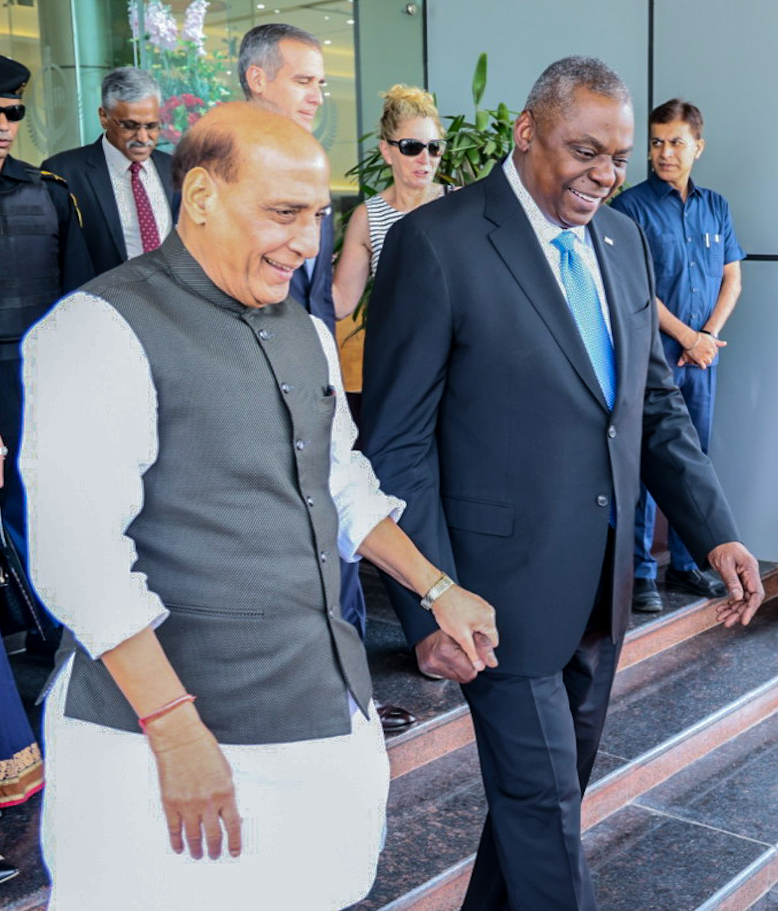

Defence Cooperation: Strengthening the India-US Strategic Partnership

The India-US strategic partnership has grown significantly over the years, with defence cooperation being a key aspect of this partnership. General Lloyd Austin's recent visit to India highlights the importance of this partnership and the efforts being made to strengthen it even further.
Let's take a look at some examples of how this partnership is being strengthened:
Case Study 1: Joint Military Exercises
The India-US partnership is reinforced through joint military exercises like Exercise Yudh Abhyas, Exercise Malabar, and Exercise Cope India. These exercises provide an opportunity for both countries to share knowledge, learn from each other's experiences and enhance interoperability and strategic coordination. The recently conducted Exercise Malabar involved the navies of India, US, Japan and Australia working together in the Bay of Bengal and enhancing their maritime capabilities.
Case Study 2: Defence Technology Cooperation
The Defence Technology and Trade Initiative (DTTI) is a platform for both countries to collaborate in research, co-development and co-production of defence technologies. The DTTI also facilitates the transfer of technology and the exploration of new areas of cooperation. Projects like the Jet Engine Technology Joint Working Group and the Defence Innovation Unit-Experimental (DIUx) have paved the way for closer cooperation in defence technology.
Case Study 3: Defence Procurement
India is one of the largest importers of defence equipment in the world, and the US is one of the largest exporters. The partnership between the two countries in defence procurement has strengthened over the years, with India procuring equipment like C-17 Globemaster III transport aircraft, C-130J Super Hercules transport aircraft and Apache attack helicopters from the US. The US has also designated India as a Major Defence Partner, which makes it easier for India to access advanced defence technologies.
Conclusion:
The India-US strategic partnership is based on shared values and mutual interests, and defence cooperation is a significant dimension of this partnership. The partnership has grown significantly over the years, with joint military exercises, defence technology cooperation and defence procurement being key areas of cooperation. The recent visit of General Lloyd Austin to India highlights the importance of this partnership, and the efforts being made to strengthen it even further.
The India-US partnership has the potential to contribute to regional and global peace and stability, and it is important that both countries continue to work together towards this goal.
Curated by Team Akash.Mittal.Blog
Share on Twitter Share on LinkedIn